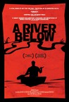
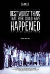
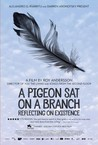

Movie Releases By Score


|
901.
Ten Canoes
Release Date:
June 1, 2007
The first feature film to be shot entirely in Aboriginal language (predominantly Ganalbingu), Ten Canoes is set both in the past (centuries ago, before the coming of white people to Australia) and in the Ganalbingu mythical past.
|

|
902.
Gilles' Wife
Release Date:
November 16, 2005
Set in the 1930's, Gilles' Wife is a haunting tale of love and betrayal in a small mining town on the outskirts of France. [Cinema Guild]
|

|
903.
The Maid
Release Date:
October 16, 2009
The Maid is an insightful comedic drama about family, class and self-discovery. (Elephant Eye Films)
|

|
904.
Cowards Bend the Knee or The Blue Hands
Release Date:
August 11, 2004
A 10-part penny dreadful, a peepshow melodrama, loosely conceived around the filmmaker's autobiography, with an aesthetic that is one part "Vampire" serial, one part psycho fever-dream. (Film Forum)
|

|
905.
Merci pour le Chocolat
Release Date:
July 31, 2002
A mystery thriller set on the lakeside of Lausanne, Switzerland.
|

|
906.
The Filth and the Fury
Release Date:
April 7, 2000
An English documentary by Julien Temple which details the short but tempestuous life of the punk rock band the Sex Pistols from the perspective of the band members themselves, unlike the 20-year-old Temple film "The Great Rock 'n' Roll Swindle" which focuses instead on the perspective of Malcolm McLaren, the band's controversial manager.
|

|
907.
A Simple Plan
Release Date:
December 11, 1998

Captivated by the lure of sudden wealth, the quiet rural lives of two brothers (Paxton, Thornton) erupt into conflicts of greed, paranoia and distrust when over four million dollars in cash is discovered at the remote site of a downed small airplane. (Paramount Pictures)
|

|
908.
Sick: The Life & Death of Bob Flanagan, Supermasochist
Release Date:
November 7, 1997
Documentary about writer and performance artist Bob Flanagan who died at 43 of cystic fibrosis. His life was indicated by pain from the beginning and he started to develop sadomasochistic practices, which he developed finally into performances.
|

|
909.
Eastern Promises
Release Date:
September 14, 2007
The mysterious and charismatic Russian-born Nikolai Luzhin is a driver for one of London's most notorious organized crime families of Eastern European origin. The family is part of the Vory V Zakone criminal brotherhood. Headed by Semyon--whose courtly charm as the welcoming proprietor of the plush Trans-Siberian restaurant impeccably masks a cold, brutal core--the family is tested by Semyon's volatile son and enforcer, Kirill, who is more tightly bound to Nikolai than to his own father. But Nikolai's carefully maintained existence is jarred once he crosses paths at Christmastime with Anna Khitrova, a midwife at a North London hospital. Anna is deeply affected by the desperate situation of a young teenager who dies while giving birth to a baby. Anna resolves to try to trace the baby's lineage and relatives. The girl's personal diary also survives her, which is written in Russian; thus, Anna seeks answers in it. Anna's mother, Helen, does not discourage her, but Anna's irascible Russian-born uncle Stepan urges caution. He is right to do so: By delving into the diary, Anna has accidentally unleashed the full fury of the Vory. [Focus Features]
|
|
|
910.
Sicario
Release Date:
September 18, 2015
In Mexico, Sicario means hitman. In the lawless border area stretching between the U.S. and Mexico, an idealistic FBI agent (Emily Blunt) is enlisted by an elite government task force official (Josh Brolin) to aid in the escalating war against drugs. Led by an enigmatic consultant with a questionable past (Benicio Del Toro), the team sets out on a clandestine journey forcing Kate to question everything that she believes in order to survive.
|

|
911.
George Washington
Release Date:
October 27, 2000
Set in the landscape of a rural Southern town, George Washington is a stunning portrait of how a group of young kids come to grips with a hard world of choices and consequences. During an innocent game in an abandoned amusement park, a member of the group dies. (Cowboy Booking International)
|

|
912.
Stranded: I've Come from a Plane That Crashed on the Mountains
Release Date:
October 22, 2008
It is one of the most astonishing and inspiring survival tales of all time. On October 13, 1972, a young rugby team from Montevideo, Uruguay, boarded a plane for a match in Chile—and then vanished into thin air. Two days before Christmas, 16 of the 45 passengers miraculously resurfaced. They had managed to survive for 72 days after their plane crashed on a remote Andean glacier. Thirty-five years later, the survivors returned to the crash site—known as the Valley of Tears—to recount their harrowing story of defiant endurance and indestructible friendship. Previously documented in the 1973 worldwide bestseller “Alive” (and the 1993 Ethan Hawke movie of the same name), this shocking true story finally gets the cinematic treatment it deserves. Visually breathtaking and crafted with riveting detail by documentary filmmaker (and childhood friend of the survivors) Gonzalo Arijon with a masterful combination of on-location interviews, archival footage and reenactments; Stranded is by turns hauntingly powerful and spiritually moving. (Zeigeist Films)
|

|
913.
The Hate U Give
Release Date:
October 5, 2018

Starr Carter is constantly switching between two worlds: the poor, mostly black, neighborhood where she lives and the rich, mostly white, prep school she attends. The uneasy balance between these worlds is shattered when Starr witnesses the fatal shooting of her childhood best friend Khalil at the hands of a police officer. Now, facing pressures from all sides of the community, Starr must find her voice and stand up for what's right.
|
|
|
914.
At Berkeley
Release Date:
November 8, 2013
The University of California at Berkeley, the oldest and most prestigious member of a ten campus public education system, is also one of the finest research and teaching facilities in the world. The film, At Berkeley, shows the major aspects of university life, its intellectual and social mission, its obligation to the state and to larger ideas of higher education, as well as illustrates how decisions are made and implemented by the administration in collaboration with its various constituencies.
|

|
915.
Blade Runner 2049
Release Date:
October 6, 2017
Thirty years after the events of the first film, a new blade runner, LAPD Officer K (Ryan Gosling), unearths a long-buried secret that has the potential to plunge what’s left of society into chaos. K’s discovery leads him on a quest to find Rick Deckard (Harrison Ford), a former LAPD blade runner who has been missing for 30 years.
|

|
916.
Step
Release Date:
August 4, 2017

Step documents the senior year of a girls’ high-school step dance team against the background of inner-city Baltimore. As each one tries to become the first in their families to attend college, the girls strive to make their dancing a success against the backdrop of social unrest in the troubled city.
|

|
917.
Experimenter
Release Date:
October 16, 2015
In 1961, social psychologist Stanley Milgram (Peter Sarsgaard) conducted the "obedience experiments" at Yale University. The experiments observed the responses of ordinary people asked to send harmful electrical shocks to a stranger. Despite pleadings from the person they were shocking, 65 percent of subjects obeyed commands from a lab-coated authority figure to deliver potentially fatal currents. With Adolf Eichmann’s trial airing in living rooms across America, Milgram’s Kafkaesque results hit a nerve, and he was accused of being a deceptive, manipulative monster. Experimenter invites us inside Milgram’s whirring mind, beginning with his obedience research and wending a path to uncover how inner obsessions and the times in which he lived shaped a parade of human behavior inquiries. [Magnolia Pictures]
|

|
918.
Eden
Release Date:
June 19, 2015
Paul (Félix de Givry) is a teenager in the underground scene of early-nineties Paris. Rave parties dominate that culture, but he's drawn to the more soulful rhythms of Chicago's garage house. He forms a DJ collective named Cheers (as, in a parallel storyline, two of his friends form one called Daft Punk, who float throughout the movie), and together he and his friends plunge into the ephemeral nightlife of sex, drugs, and endless music. [Broadgreen Pictures]
|

|
919.
The Revolution Will Not Be Televised
Release Date:
November 5, 2003
On April 12th 2002 the world awoke to the news that Venezuelan President Hugo Chavez had been removed from office and had been replaced by a new interim government. What had in fact taken place was the first Latin American coup of the 21st century, and the world's first media coup. (Vitagraph Films)
|

|
920.
A History of Violence
Release Date:
September 23, 2005
Tom Stall is living a happy and quiet life with his lawyer wife and their two children in the small town of Millbrook, Indiana, until one night their idyllic existence is shattered when Tom foils a vicious attempted robbery in his diner. (New Line Cinema)
|

|
921.
A Mighty Wind
Release Date:
April 16, 2003
In the tradition of "This is Spinal Tap," "Waiting for Guffman," and "Best in Show," this mockumentary looks at the world of folk music.
|

|
922.
The Damned United
Release Date:
October 9, 2009
Set in 1960’s and 1970’s England, The Damned United tells the confrontational and darkly humorous story of Brian Clough’s doomed 44 day tenure as manager of the reigning champions of English football Leeds United. Previously managed by his bitter rival Don Revie, and on the back of their most successful period ever as a football club, Leeds was perceived by many to represent a new aggressive and cynical style of football - an anathema to the principled yet flamboyant Brian Clough, who had achieved astonishing success as manager of Hartlepool and Derby County building teams in his own vision with trusty lieutenant Peter Taylor. Taking the Leeds job without Taylor by his side, with a changing room full of what in his mind were still Don’s boys, would lead to an unheralded examination of Clough’s belligerence and brilliance over 44 days. This is that story. The story of The Damned United. (Sony Pictures Classics)
|

|
923.
Georgia
Release Date:
December 8, 1995
Sadie (Leigh) seeks acceptance and fame from her sister Georgia (Winningham).
|

|
924.
Luce
Release Date:
August 2, 2019
A married couple is forced to reckon with their idealized image of their son, adopted from war-torn Eritrea, after an alarming discovery by a devoted high school teacher threatens his status as an all-star student.
|

|
925.
Western
Release Date:
February 16, 2018
Western follows a group of German construction workers installing a hydroelectric plant in remote rural Bulgaria. The foreign land awakens the men’s sense of adventure, but tensions mount when, Meinhard, the strong, silent and newcomer to the group, starts mixing with the local villagers. The two sides speak different languages and share a troubled history. Can they learn to trust each other — or is the stage being set for a showdown?
|

|
926.
Wadjda
Release Date:
September 13, 2013
An enterprising Saudi girl signs up for her school's Koran recitation competition in hopes of raising the remaining funds she needs to buy a green bicycle she desperately wants.
|

|
927.
Fresh
Release Date:
September 2, 1994
Death and violence anger a 12-year-old drug courier, who sets his employers against each other.
|

|
928.
The Levelling
Release Date:
March 24, 2017
Somerset, October 2014. When Clover Catto (Ellie Kendrick) receives a call telling her that her younger brother Charlie (Joe Blakemore) is dead, she must return to her family farm and face the man she hasn't spoken to in years: her father Aubrey (David Troughton). She is shocked to discover her home changed forever by the devastating floods that destroyed the area six months earlier, and Aubrey a tormented shadow of his former self. As she learns what has been going on in her long absence she and her father forge a new understanding, but can it withstand the troubles that they face on the ravaged farm as well as the truth of what drove Charlie to take his own life?
|
|
|
929.
Arrival
Release Date:
November 11, 2016
When mysterious spacecraft touch down across the globe, an elite team is put together to investigate – including language expert Louise Banks (Amy Adams). Mankind teeters on the verge of global war as everyone scrambles for answers – and to find them, Banks will take a chance that could threaten her life, and quite possibly humanity.
|

|
930.
Juno
Release Date:
December 5, 2007
Juno stars Ellen Page as the title character, a whip-smart teen confronting an unplanned pregnancy by her classmate Bleeker. With the help of her hot best friend, Leah, Juno finds her unborn child a "perfect" set of parents: an affluent suburban couple, Mark and Vanessa, longing to adopt. Luckily, Juno has the total support of her parents as she faces some tough decisions, flirts with adulthood, and ultimately figures out where she belongs. [Fox Searchlight Pictures]
|
931.
Elena
Release Date:
May 30, 2014
Elena, a young Brazilian woman, travels to New York with dreams of becoming an actress. She leaves behind a childhood spent in hiding during the military dictatorship, and she leaves behind Petra, her seven-year-old sister. Two decades later, Petra goes to New York to pursue acting and in search of Elena. But the film (and the filmmaker) cannot escape the similarities between Petra and Elena’s stories, and as they overlap, they begin to blur.
|
|

|
932.
Blue Valentine
Release Date:
December 29, 2010

Blue Valentine is the story of love found and love lost told in past and present moments in time. Flooded with romantic memories of their courtship, Dean and Cindy use one night to try and save their failing marriage. Ryan Gosling and Michelle Williams star in this honest portrait of a relationship on the rocks. (The Weinstein Company)
|

|
933.
Truman
Release Date:
April 7, 2017
Diagnosed with terminal cancer, Julián (Ricardo Darin) has decided to forgo treatment, and spend his final days tying up loose ends. When childhood friend Tomás (Javier Cámara) pays his ailing friend an unexpected visit, he quickly realizes he won’t be able to change his mind. In what will be their final reunion, the two friends set out to finalize Julián’s funeral arrangements, settle his accounts and, most importantly, find a home for his beloved dog, Truman, in this heartfelt and surprisingly humorous film. [FilmRise]
|

|
934.
Master and Commander: The Far Side of the World
Release Date:
November 14, 2003
Based on author Patrick O'Brian's series of Aubrey/Maturin novels, the film is set during the Napoleonic Wars. Crowe is Captain "Lucky" Jack Aubrey, renowned as a fighting captain in the British Navy, and Bettany is ship's doctor Stephen Maturin. Their ship, the H.M.S. Surprise, is suddenly attacked by a superior enemy. With the Surprise badly damaged and much of his crew injured, Aubrey is torn between duty and friendship as he pursues a high-stakes chase across two oceans, to intercept and capture his foe. It's a mission that can make his reputation – or destroy Lucky Jack and his crew. (20th Century Fox)
|

|
935.
Four Weddings and a Funeral
Release Date:
March 9, 1994
A confirmed British bachelor (Grant) meets the perfect woman (MacDowell) at a friend's wedding.
|

|
936.
The Secret of Kells
Release Date:
March 5, 2010
Magic, fantasy, and Celtic mythology come together in a riot of color and detail that dazzle the eyes, in a sweeping story about the power of imagination and faith to carry humanity through dark times. Young Brendan lives in a remote medieval outpost under siege from barbarian raids. But a new life of adventure beckons when a celebrated master illuminator arrives from foreign lands carrying an ancient but unfinished book, brimming with secret wisdom and powers. To help complete the magical book, Brendan has to overcome his deepest fears and venture into the enchanted forest where mythical creatures hide. It is here that he meets the fairy Aisling, a mysterious young wolf-girl, who helps him fulfill his dangerous quest. (GKIDS)
|

|
937.
Top Five
Release Date:
December 12, 2014
New York City comedian-turned-movie star Andre Allen (Chris Rock) tries to get his career back on track.
|

|
938.
Pete Seeger: The Power of Song
Release Date:
September 14, 2007
Pete Seeger was the architect of the folk revival, writing some of its best known songs including "Where Have All the Flowers Gone,” "Turn, Turn, Turn” and "If I Had A Hammer." Largely misunderstood by his critics, including the US government, for his views on peace, unionism, civil rights and ecology, Seeger was targeted by the communist witch hunt of the Fifties. He was picketed, protested, blacklisted, and, in spite of his enormous popularity, banned from American television for more than 17 years. With a combination of never-before-seen archival footage and personal films made by Seeger and his wife, Pete Seeger: The Power of Song chronicles the life of this legendary artist and political activist. (Jim Brown Productions)
|

|
939.
Closet Monster
Release Date:
September 23, 2016
A fresh take on the coming-of-age story, this surreal tale follows the artistically driven Oscar (Connor Jessup) hovering on the brink of adulthood. Struggling to find his place in the world after a rough childhood and haunted by images of a tragic incident, Oscar dreams of escaping his small town. After he meets a mysterious and attractive new co-worker, Oscar follows the guidance of his pet hamster Buffy (Isabella Rossellini) and faces his demons to find the life he wants. [Strand Releasing]
|
|
|
940.
Katyn
Release Date:
February 18, 2009
In 1941, during their march on Moscow, the Nazis discovered the mass graves of 22,00 Polish intellectuals, clergy and officers. Katyn is the story of Joseph Stalin's order to execute these people.
|

|
941.
Coming Home
Release Date:
September 9, 2015
Lu Yanshi (Chen Daoming) and Feng Wanyu (Gong Li) are a devoted couple forced to separate when Lu is arrested and sent to a labor camp as a political prisoner, just as his wife is injured in an accident. Released during the last days of the Cultural Revolution, he finally returns home only to find that his beloved wife has amnesia and remembers little of her past. Unable to recognize Lu, she patiently waits for her husband's return. A stranger alone in the heart of his broken family, Lu Yanshi determines to resurrect their past together and reawaken his wife's memory. [Sony Pictures Classics]
|

|
942.
Living in Oblivion
Release Date:
July 21, 1995
Film about filmmaking. It takes place during one day on set of non-budget movie. Ultimate tribute to all independent filmmakers.
|

|
943.
Coco
Release Date:
November 22, 2017
Despite his family’s baffling generations-old ban on music, Miguel (Anthony Gonzalez) dreams of becoming an accomplished musician like his idol, Ernesto de la Cruz (Benjamin Bratt). Desperate to prove his talent, Miguel finds himself in the stunning and colourful Land of the Dead following a mysterious chain of events. Along the way, he meets charming trickster Hector (Gael García Bernal), and together, they set off on an extraordinary journey to unlock the real story behind Miguel's family history.
|

|
944.
Locke
Release Date:
April 25, 2014
Ivan Locke has worked hard to craft a good life for himself. With one phone call, that life will collapse around him.
|

|
945.
Bridge of Spies
Release Date:
October 16, 2015
Bridge of Spies tells the story of James Donovan (Tom Hanks), a Brooklyn lawyer who finds himself thrust into the center of the Cold War when the CIA sends him on the near-impossible task to negotiate the release of a captured American U-2 pilot. [Dreamworks]
|

|
946.
Us
Release Date:
March 22, 2019
A mother (Lupita Nyong’o) and a father (Winston Duke) take their kids (Shahadi Wright Joseph, Evan Alex) for an idyllic summer getaway. Haunted by an unexplainable and unresolved trauma from her past and compounded by a string of eerie coincidences, Adelaide feels her paranoia elevate to high-alert as she grows increasingly certain that something bad is going to befall her family. After spending a tense beach day with their friends, the Tylers (Elisabeth Moss, Tim Heidecker, Cali Sheldon, Noelle Sheldon), Adelaide and her family return to their vacation home. When darkness falls, the Wilsons discover the silhouette of four figures holding hands as they stand in the driveway. Us pits an endearing American family against a terrifying and uncanny opponent: doppelgängers of themselves.
|

|
947.
Driving Miss Daisy
Release Date:
December 15, 1989
This adaptation of Alfred Uhry's Pulitzer Prize-winning play looks at the 25-year relationship between an elderly Jewish woman and her African-American chauffeur.
|

|
948.
Shaun the Sheep Movie
Release Date:
August 5, 2015
When Shaun decides to take the day off and have some fun, he gets a little more action than he bargained for. A mix up with the Farmer, a caravan and a very steep hill lead them all to the Big City and it's up to Shaun and the flock to return everyone safely to the green grass of home.
|

|
949.
White Material
Release Date:
November 19, 2010
The regular army is preparing to reestablish order in the country. To clean up. To eliminate the rebel officer also known as The Boxer and rid the countryside of roving child soldiers. All the expatriates have gone home, getting out before things turn nasty. Of the Vials - coffee planters who have lived here for two generations - Maria stands firm. She’s not about to give in to rumors or abandon her harvest at the first sound of gunfire. Just like her father-in-law and her ex-husband who is also the father of her son (a little too much of a slacker in her opinion) she is convinced that Cherif,
mayor of the neighboring town, will protect them. If she asks him, he will save the plantation. He has a personal guard, a private militia of tough guys, heavily armed and well trained. (IFC Films)
|

|
950.
The Station Agent
Release Date:
October 3, 2003
A film about three people with nothing in common, except their shared solitude, until chance circumstances bring their lives together. Before long, from this forgotten depot, this mismatched threesome forges an unlikely bond, which ultimately reveals that even isolation is better shared. (Miramax)
|

|
951.
Woman at War
Release Date:
March 1, 2019
Halla is a fifty-year-old independent woman. But behind the scenes of a quiet routine, she leads a double life as a passionate environmental activist. Known to others only by her alias “The Woman of the Mountain,” Halla secretly wages a one-woman-war on the local aluminum industry. As Halla’s actions grow bolder, from petty vandalism to outright industrial sabotage, she succeeds in pausing the negotiations between the Icelandic government and the corporation building a new aluminum smelter. But right as she begins planning her biggest and boldest operation yet, she receives an unexpected letter that changes everything. Her application to adopt a child has finally been accepted and there is a little girl waiting for her in Ukraine. As Halla prepares to abandon her role as saboteur and savior of the Highlands to fulfill her dream of becoming a mother, she decides to plot one final attack to deal the aluminum industry a crippling blow.
|
|
|
952.
Foxcatcher
Release Date:
November 14, 2014
Foxcatcher tells the true story of Olympic Wrestling Champion brothers Mark Schultz (Channing Tatum) and Dave Schultz (Mark Ruffalo) and their relationship with the eccentric John du Pont (Steve Carell) that led to murder. [Sony Pictures Classics]
|

|
953.
Dolores
Release Date:
September 1, 2017
Dolores Huerta bucks 1950s gender conventions by starting the country's first farm worker's union with fellow organizer Cesar Chavez. What starts out as a struggle for racial and labor justice, soon becomes a fight for gender equality within the same union she is eventually forced to leave. As she wrestles with raising 11 children, three marriages, and is nearly beaten to death by a San Francisco tactical police squad, Dolores emerges with a vision that connects her new found feminism with racial and class justice.
|

|
954.
Arabian Nights: Volume 2, The Desolate One
Release Date:
December 11, 2015
In which Scheherazade tells of how desolation invaded men: It hath reached me, O auspicious King, that a distressed judge will cry instead of giving out her sentence on a night when all three moons are aligned. A runaway murderer will wander through the land for over forty days and will tele transport himself to escape the Police while dreaming of prostitutes and partridges. A wounded cow will reminisce about a thousand-year-old olive tree while saying what she must say, which will sound none less than sad! The residents of a tower block in the suburbs will save parrots and piss inside lifts while surrounded by dead people and ghosts; including in fact a dog that... And seeing the morning break, Scheherazade fell silent. Damned tales! If things continue this way my daughter will surely end up with her throat slit! the Grand-Vizier, Scheherazade's father, thinks in his palace in Baghdad. [Kino Lorber]
|

|
955.
Twinsters
Release Date:
July 17, 2015
In February 2013, Anaïs Bordier, a French fashion student living in London, stumbled upon a YouTube video featuring Samantha Futerman, an actress in Los Angeles, and was struck by their uncanny resemblance. After discovering they were born on the same day in Busan, Korea and both put up for adoption, Anaïs reached out to Samantha via Facebook. In Twinsters, we follow Samantha and Anaïs’ journey into sisterhood, witnessing everything from their first meeting, to their first trip back to Korea where their separation took place.
|

|
956.
Beginners
Release Date:
June 3, 2011
Beginners tells the bittersweet story of a man who learns that his terminally ill father is gay and has a young lover. (Focus Features)
|

|
957.
Bamako
Release Date:
February 14, 2007
Set in the courtyard of house in Bamako, the capital city of Mali, this film features a mock trial between representatives of African society and international financial institutions. Alongside these very public political proceedings, the film offers an intimate glimpse of everyday life in contemporary Africa.
|

|
958.
Autumn Tale
Release Date:
August 6, 1999
The final chapter in French director Eric Rohmer's "Four Seasons" series tells the story of a 45-year old widow whose friends are determined to find her a new lover.
|

|
959.
The China Syndrome
Release Date:
March 16, 1979
This thriller about the dangers of nuclear power arrived in theaters a mere thirteen days before the disaster at Three Mile Island. In it, a reporter finds what appears to be a cover-up of safety hazards at a California nuclear power plant.
|

|
960.
Bright Star
Release Date:
September 16, 2009
London 1818: a secret love affair begins between 23 year old English poet, John Keats, and the girl next door, Fanny Brawne, and outspoken student of fashion. This unlikely pair started at odds, he thinking her a stylish minx, she unimpressed by literature in general. It was the illness of Keats' younger brother that drew them together. Keats was touched by Fanny's efforts to help and agreed to teach her poetry. By the time Fanny's alarmed mother and Keats' best friend Brown realized their attachment, the relationship had an unstoppable momentum. Intensely and helplessly absorbed in each other, the young lovers were swept into powerful new sensation, "I have the feeling as if I were dissolving," Keats wrote her. Together they rode a wave of romantic obsession that deepened as their troubles mounted. Only Keats' illness proved insurmountable. (Apparition)
|
961.
The Headless Woman
Release Date:
August 19, 2009
A mysterious and intriguing tale of a woman who may have killed someone or something while driving on a dirt road. Dazed and confused, she tries to piece together what happened, while her husband systematically tries to erase her tracks. (Strand Releasing)
|
|

|
962.
Halloween
Release Date:
October 25, 1978
On Halloween night in 1963, 6-year old Michael Myers stabbed his sister to death. After being in a mental hospital for 15 years, Myers escapes and returns to Haddonfield, Illinois to kill.
|

|
963.
Mandy
Release Date:
September 14, 2018
Pacific Northwest. 1983 AD. Outsiders Red Miller and Mandy Bloom lead a loving and peaceful existence. When their pine-scented haven is savagely destroyed by a cult led by the sadistic Jeremiah Sand, Red is catapulted into a phantasmagoric journey filled with bloody vengeance and laced with fire.
|

|
964.
Working Woman
Release Date:
March 29, 2019
Orna, (Liron Ben Shlush) is the mother of three young children with a husband struggling to start his own restaurant. To help support her family Orna returns to the workplace, landing a job with a former army superior, Benny (Menashe Noy) who is now a successful real estate developer. While Orna embraces her new position and tries to balance its demands with her home life, she begins to experience escalating sexual harassment from her boss. Her rapid rise through the ranks and her increasing financial success seem to parallel a pattern of predatory behavior which ultimately brings her career and marital relationship to the brink. This timely and devastating story is expertly told by long time feminist filmmaker Michal Aviad. [Zeitgeist Films]
|

|
965.
Wait Until Dark
Release Date:
October 26, 1967
A recently blinded woman is terrorized by a trio of thugs while they search for a heroin-stuffed doll they believe is in her apartment.
|

|
966.
Weekend
Release Date:
September 23, 2011
After meeting one lonely Friday night at a bar, Russell and Glen find themselves caught up in an lost weekend full of sex, drugs, and intimate conversation. Although they have conflicting ideas of what it is they want from life and certainly how to get it, they form a startling emotional connection that will resonate throughout their lives. (Sundance Selects)
|

|
967.
Raw
Release Date:
March 10, 2017
Everyone in Justine’s family is a vet and a vegetarian. At sixteen she’s a brilliant student starting out at veterinary school where she experiences a decadent, merciless and dangerously seductive world. Desperate to fit in, she strays from her family principles and eats raw meat for the first time. Justine will soon face the terrible and unexpected consequences as her true self begins to emerge.
|

|
968.
The Man Who Fell to Earth
Release Date:
May 28, 1976
The Man Who Fell to Earth is a daring exploration of science fiction as an art form. The story of an alien on an elaborate rescue mission provides the launching pad for Nicolas Roeg’s visual tour de force, a formally adventurous examination of alienation in contemporary life. Rock legend David Bowie, in his acting debut, completely embodies the title role, while Candy Clark, Buck Henry, and Rip Torn turn in pitch-perfect supporting performances. The film’s hallucinatory vision was obscured in the American theatrical release, which deleted nearly twenty minutes of crucial scenes and details. [The Criterion Collection]
|
969.
Under the Sun
Release Date:
July 6, 2016
"My father says that Korea is the most beautiful country... Korea is the land of the rising sun," says eight-year-old schoolgirl Zin-mi. Despite continuous interference by government handlers, director Vitaly Mansky still managed to document life in Pyongyang, North Korea in this fascinating portrait of one girl and her parents in the year as she prepares to join the Korean Children's Union on the Day Of The Shining Star (Kim Jong-Il's birthday). As the family receives instruction on how to be the ideal patriots, Mansky's watchful camera capture details from comrades struggling to stay awake during an official event to Zin-mi's tears at a particularly grueling dance lesson. [Icarus Films]
|
|

|
970.
Three Identical Strangers
Release Date:
June 29, 2018
Three strangers are reunited by astonishing coincidence after being born identical triplets, separated at birth, and adopted by three different families. Their jaw-dropping, feel-good story instantly becomes a global sensation complete with fame and celebrity, however, the fairy-tale reunion sets in motion a series of events that unearth an unimaginable secret - a secret with radical repercussions for us all. [Neon]
|

|
971.
Wrinkles
Release Date:
July 4, 2014
Wrinkles portrays the friendship between Emilio and Miguel, two elderly gentlemen shut away in a retirement home. Recent arrival Emilio, in the early stages of Alzheimer, is helped by Miguel to avoid ending up on the feared top floor of the care home, also known as the lost cause or "assisted" floor. Their wild plan infuses their otherwise tedious days with humor and tenderness.
|

|
972.
Mishima: A Life in Four Chapters
Release Date:
September 20, 1985
A fictionalized account in four chapters of the life of celebrated Japanese writer Yukio Mishima.
|

|
973.
Revenge
Release Date:
May 11, 2018
Jen (Matilda Lutz) is enjoying a romantic getaway with her wealthy boyfriend which is suddenly disrupted when his sleazy friends arrive for an unannounced hunting trip. Tension mounts in the house until the situation abruptly––and viciously––intensifies, culminating in a shocking act that leaves Jen left for dead. Unfortunately for her assailants, Jen survives and reemerges with a relentless, wrathful intent: revenge.
|

|
974.
Summer 1993
Release Date:
May 25, 2018
In the summer 1993, following the death of her parents, six years old Frida moves from Barcelona to the Catalan province to live with her aunt and uncle, who are now her new legal guardians. The country life is a challenge for Frida – time passes differently in her new home and the nature that surrounds her is mysterious and estranging. She now has a little sister for whom she has to take care of and has to deal with new feelings, such as jealousy. Often, Frida is naively convinced that running away would be the best solution to her problems. Yet, the family does what it can to achieve a fragile new balance and bring normality to their life. Occasional family outings to a local fiesta or a swimming pool, cooking or listening to jazz in the garden bring them moments of happiness. Slowly, Frida realizes that she is there to stay and has to adapt to the new environment. Before the season is over, she has to cope with her emotions and her parents have to learn to love her as their own daughter.
|

|
975.
Il Divo
Release Date:
April 24, 2009
In Rome, at dawn, when everyone is sleeping, one man is awake. That man is Giulio Andreotti. He's awake because he has to work, write books, move in fashionable circles and, last but not least, pray. Calm, crafty and inscrutable, Andreotti is synonym of power in Italy for over four decades. At the beginning of the Nineties, this impassive yet insinuating, ambiguous yet reassuring figure appears set to assume his seventh mandate as Prime Minister without arrogance and without humility. Approaching seventy, Andreotti is a gerontocrat who, with all the attributes of God, is afraid of no one and does not know the meaning of awe, since he is accustomed to seeing it stamped on the faces of all his interlocutors. His satisfaction is muted, impalpable. For him, satisfaction is power, with which he has a symbiotic relationship. Power the way he likes it. Unwavering and immutable, from the outset. He emerges unscathed from everything: electoral battles, terrorist massacres, slanderous accusations. He is untouched by it all, unchanging. Until the strongest counter power in Italy, the Mafia, declares war on him. Then things change. Perhaps even for the enigmatic, immortal Andreotti. But the question is: do they really change or only appear to? We can be sure of one thing: it is difficult to tarnish Andreotti, the man who knows the ways of the world better than any of us. [Music Box Films]
|

|
976.
Leviathan
Release Date:
March 1, 2013
Filmed off the coast of New Bedford, Massachusetts, the country’s largest fishing port with over 500 ships sailing from its harbor every month, Leviathan follows one such vessel, a hulking groundfish trawler, into the surrounding murky black waters. Filmmakers Lucien Castaing-Taylor (Sweetgrass) and Verena Paravel (Foreign Parts) use a dozen cameras to present a vivid representation of the work, the sea, the machinery and the players, both human and marine. [Cinema Guild]
|

|
977.
Fish Tank
Release Date:
January 15, 2010
The film is an emotionally stunning coming-of-age story, electrified by the breakthrough performance of its young star Katie Jarvis. Fifteen-year-old Mia is in a constant state of war with her family and the world around her, without any creative outlet for her considerable energies save a secret love of hip-hop dance. When she meets her party-girl mother’s charming new boyfriend Connor, she is amazed to find he returns her attention, and believes he might help her start to make sense of her life. A clear-eyed, potent portrait of teenage sexuality and vulnerability, Fish Tank confirms writer/director Arnold’s status as one of the leading figures of new British cinema. (IFC Films)
|

|
978.
Little Shop of Horrors
Release Date:
December 19, 1986
When geeky Seymour Krelborn discovers a very strange and unusual plant, business starts to turn around at the flower shop where he works and (sadly) lives. When the plant's health is threatened, Seymour desperately discovers the gory secret to keeping it alive. As Seymour grows more and more anemic and the number of bandages adorning his fingers mounts, the plant thrives, business booms and Seymour gets the girl. But as the plant grows bigger, so does its demand for the life-nourishing liquid is craves and Seymour must discover other, bigger sources for feeding it...like the sadistic dentist next door.
|

|
979.
No
Release Date:
February 15, 2013
In 1988, Chilean military dictator Augusto Pinochet, due to international pressure, is forced to call a referendum on his presidency. The country will vote YES or NO to Pinochet extending his rule for another eight years. Opposition leaders for the NO persuade a brash young advertising executive, Rene Saavedra (Gael Garcia Bernal), to spearhead their campaign. With scant resources and under scrutiny by the despot's minions, Saavedra and his team devise an audacious plan to win the election and set Chile free. [Sony Pictures Classics]
|
|  |
980.
A River Below
Release Date:
November 3, 2017
A River Below captures the Amazon in all its complexity as it examines the actions of environmental activists using the media in an age where truth is a relative term.
|
|  |
981.
Best Worst Thing That Ever Could Have Happened
Release Date:
November 18, 2016
One of the truly legendary musicals in the history of Broadway, Merrily We Roll Along opened to enormous fanfare in 1981, and closed after sixteen performances. For the first time, Best Worst Thing That Ever Could Have Happened draws back the curtain on the extraordinary drama of the show's creation - and tells the stories of the hopeful young performers whose lives were transformed by it.
|

|
982.
Jackie
Release Date:
December 2, 2016
Jackie is a searing and intimate portrait of one of the most important and tragic moments in American history, seen through the eyes of the iconic First Lady, then Jacqueline Bouvier Kennedy (Natalie Portman). Jackie places us in her world during the days immediately following her husband's assassination. Known for her extraordinary dignity and poise, here we see a psychological portrait of the First Lady as she struggles to maintain her husband’s legacy and the world of "Camelot" that they created and loved so well. [Fox Searchlight]
|

|
983.
My Architect
Release Date:
November 12, 2003
A tale of love and art, betrayal and forgiveness -- in which the illegitimate son of legendary architect Louis I. Kahn undertakes a five year, worldwide exploration to understand his long-dead father. (New Yorker Films)
|

|
984.
Hot Fuzz
Release Date:
April 20, 2007
In this action-packed comedy from the makers of "Shaun of the Dead," Nicholas Angel (Pegg) is the finest police officer London has to offer, with an arrest record 400% higher than any other officer on the force. He's so good, he makes everyone else look bad. As a result, Angel's superiors send him to a place where his talents won't be quite so embarrassing -- the sleepy and seemingly crime-free village of Sandford. A small village is about to get some big city justice. (Rogue Pictures)
|

|
985.
Django Unchained
Release Date:
December 25, 2012
Django is a slave whose brutal history with his former owners lands him face-to-face with German-born bounty hunter Dr. King Schultz. Schultz is on the trail of the murderous Brittle brothers, and only Django can lead him to his bounty. The unorthodox Schultz acquires Django with a promise to free him upon the capture of the Brittles – dead or alive. (The Weinstein Company)
|

|
986.
Sister
Release Date:
October 5, 2012
Simon lives with his older sister in a housing complex below a luxury Swiss ski resort. With his sister drifting in and out of jobs and relationships, twelve-year-old Simon takes on the responsibility of providing for the two of them. Everyday, he takes the lift up to the opulent ski world above, stealing equipment from rich tourists to resell to the local kids down in the valley. He is able to keep their little family afloat with his small-time hustles and his sister is thankful for the money he brings in. But when Simon partners with a crooked British seasonal worker, he begins to lose his boundaries, affecting his relationship with his sister and plummeting him into dangerous territory. (Adopt Films)
|

|
987.
Police, Adjective
Release Date:
December 23, 2009
Cristi is a young undercover cop who undergoes a crisis of conscience when he is pressured to
arrest a teenager who offers hash to classmates. Not wanting to ruin the life of a young man he considers merely irresponsible, Cristi must either allow the arrest to be a burden on his conscience, or face censure by his self-serious superior, for whom the word “conscience” has an entirely different meaning. (IFC Films)
|
|
|
988.
A Girl Walks Home Alone at Night
Release Date:
November 21, 2014
In the Iranian ghost-town Bad City, a place that reeks of death and loneliness, the townspeople are unaware they are being stalked by a lonesome vampire.
|

|
989.
Wattstax (re-released)
Release Date:
June 6, 2003
This documentary contains selections from a non-stop 7-hour musical event celebrating the seventh annual Watts Summer Festival, held at the Los Angeles Coliseum on August 20, 1972.
|
|
|
990.
Grin Without a Cat
Release Date:
May 1, 2002
Originally released in 1978, this is Chris Marker's epic film-essay on the worldwide political wars of the 60's and 70's: Vietnam, Bolivia, May '68, Prague, Chile, and the fate of the New Left. (First Run / Icarus Films)
|

|
991.
Happiness
Release Date:
October 16, 1998
A series of intertwining love stories, stories of connections missed and made between people, how people always struggle to make a connection, and to what degree they succeed or don't. (Good Machine Releasing)
|

|
992.
The Big Short
Release Date:
December 11, 2015
When four outsiders saw what the big banks, media and government refused to, the global collapse of the economy, they had an idea: The Big Short. Their bold investment leads them into the dark underbelly of modern banking where they must question everyone and everything. [Paramount Pictures]
|

|
993.
Black Orpheus
Release Date:
February 24, 2006
1960 Academy Award Winner and winner of the Palme d'Or at the 1959 Cannes Film Festival, Marcel Camus's Black Orpheus retells the Greek myth of Orpheus and Eurydice against the madness of Carnival in Rio de Janeiro. With its magnificent color photography and lively soundtrack, this film brought the infectious bossa nova beat to the United States. (Criterion Collection)
|
994.
The Devil's Miner
Release Date:
March 17, 2006
The Devil's Miner is the story of 14 year-old Basilio Vargas and his 12 year-old brother Bernardino, as they work in the Bolivian silver mines of Cerro Rico, which date back to the sixteenth century. Through the children's eyes, we encounter the world of devout Catholic miners who sever their ties with God upon entering the mountain. It is an ancient belief that the devil, as represented by hundreds of statues constructed in the tunnels, determines that fate of all who work within the mines. (First Run Features)
|
|

|
995.
Closed Curtain
Release Date:
July 9, 2014
In a secluded house by the sea with the curtains shut, a screenwriter hides from the world with only his dog as company. The tranquility is abruptly broken one night by the arrival of a young woman fleeing from the authorities. Refusing to leave, she takes refuge in the house. But come dawn, another unexpected presence will change everything. [Variance Films]
|

|
996.
Moana
Release Date:
November 23, 2016
Moana, a spirited teenager and born navigator, sets sail from the ancient South Pacific islands of Oceania in search of a fabled island. During her incredible journey, she teams up with her hero, the legendary demi-god Maui, to traverse the open ocean on an action-packed voyage, encountering enormous sea creatures, breathtaking underworlds and ancient folklore. [Walt Disney Studios]
|
|

|
997.
A Pigeon Sat on a Branch Reflecting on Existence
Release Date:
June 3, 2015
Sam and Jonathan, a pair of hapless novelty salesman, take us on a kaleidoscopic tour of the human condition in reality and fantasy, unfolding in absurdist episodes: a sing-along at a 1940s beer hall, a randy flamenco teacher, a thirsty King Charles XII of Sweden en route to battle, and a diabolical metaphor for the horrors inflicted by European colonialism. It is a journey that unveils the beauty of single moments, the pettiness of others, life’s grandeur, and the humor and tragedy hidden within us all. [Magnolia Pictures]
|

|
998.
The Wailing
Release Date:
June 3, 2016
A foreigner’s mysterious appearance in a quiet, rural village causes suspicion among the locals - suspicion which quickly turns to hysteria as the townspeople begin killing each other in brutal outbursts for seemingly no reason. As the investigating officer watches his daughter fall under the same savage spell, he agrees to consult a shaman for answers - unknowingly escalating the situation into something far more dangerous. [Well Go USA]
|

|
999.
White Sun
Release Date:
September 6, 2017
When his father dies, anti-regime partisan Chandra travels to his remote mountain village after nearly a decade away. Little Pooja is anxiously awaiting the man she thinks is her father, but she’s confused when Chandra arrives with Badri, a young street orphan rumored to be his son. Chandra must face his brother Suraj, who was on the opposing side during the Nepalese civil war. The two brothers cannot put aside political feelings while carrying their father's body down the steep mountain path to the river for cremation. Suraj storms off in a rage, leaving Chandra with no other men strong enough to help. Under pressure from the village elders, Chandra must seek help from outside the village to obey the rigid caste and discriminatory gender traditions he fought to eliminate during the war. Chandra searches for a solution in neighboring villages, among the police, guests at a local wedding, and rebel guerrillas.
|

|
1000.
The Empty Hours
Release Date:
July 11, 2014
On the desolated coast of Veracruz, 17 year-old Sebastián takes over running his uncle’s small and cozy rent-by-the hour motel. There he meets Miranda, a regular customer who comes to the motel to meet a lover who always keeps her waiting. As Sebastián and Miranda get to know each other, an ambiguous game of seduction begins between them. [Strand Releasing]
|